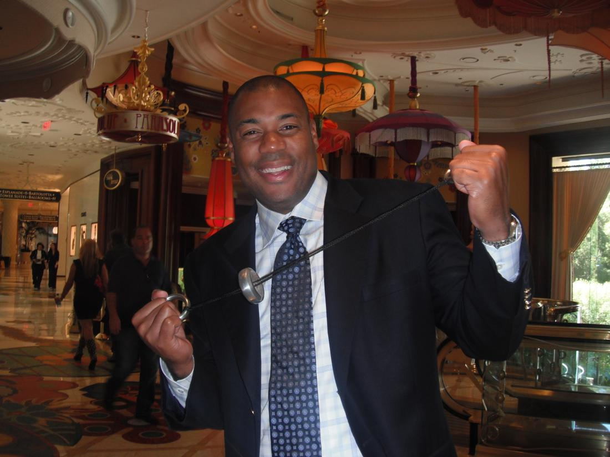
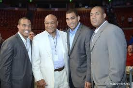

Foreman Jr Rocks!

Great name, better man, best friend – you may his dad and they share a name but George Jr is truly one of the good guys. Smart, fun and wildly entrepreneurial —Foreman Sr. has five sons: George Jr., George III (“Monk”), George IV (“Big Wheel”), George V (“Red”), and George VI (“Little Joey”).
When asked why all his sons being named George, Foreman said, “I named all my sons George Edward Foreman.”
And I tell people, ‘If you’re going to get hit as many times as I’ve been hit by Mohammad Ali, Joe Frazier, Ken Norton, Evander Holyfield– you’re not going to remember many names.”

My kids idea of a hard life is to live in a house with only one phone.
Our job as fathers is to plant good seeds and be an example. In God’s own timing, our children will get thirsty, and, if we as good fathers have planted good seeds, then those seeds will soak in the water, take root, and bear spiritual fruit in our kids. The way we plant good seeds is twofold: by speaking truth and modeling truth, living an authentic faith before them. Kids have an innate sense of knowing when something or someone is fake, so authenticity is vital.
For example, fathers can show their children how men are supposed to treat women by the way they treat their wives. I’ve always heard the best thing a father can do for his children is love their mother. This speaks volumes to our kids. If we treat our wives with dignity and respect, then our daughters will come to expect that from the men who come into their lives. All men will be held up to their “Daddy” standard and that can be a good thing. On the down side, if we model critical and demeaning attitudes and emotional unavailability, our daughters will inevitably set low standards, but they will also crave male acceptance and validation which can set them up for unhealthy relationships.
Another thing for us to remember about modeling is that most children shape their images and attitudes about God based on their fathers. That’s a pretty tall responsibility. If our personalities are callous, overly critical, unreasonable, or addictive, our children will grow up with a warped image of God. If we are secure, loving, patient, and compassionate, our children will have a healthier understanding of God’s true nature.
Excerpt from “Fatherhood by George”

Free · live on Zoom every Sunday
The Secret Pitch Formula
Join Forbes live for the Pitch Secrets Masterclass. Over 80,000 people have learned the 7-second hook, the three pitch patterns behind $2.5 billion in sales, and how to close without sounding salesy. Free, with a gift worth $500 for registering.
Sundays, 2 p.m. PT / 5 p.m. ET. Registration and the Zoom link are at pitchsecretstraining.com.